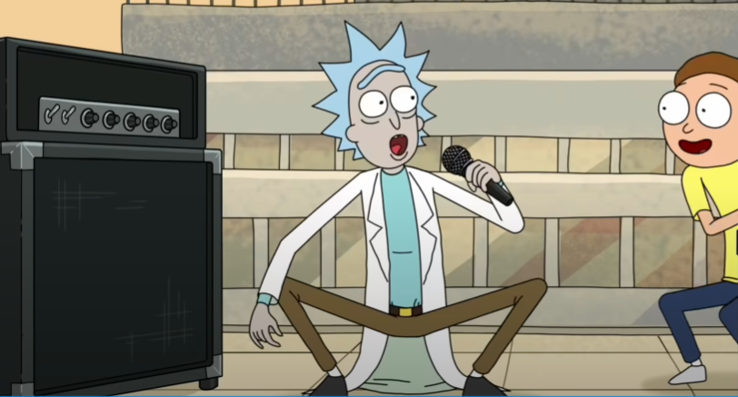

Born in 1966, Rick Astley has become one of the greatest and most iconic Ricks of all time. Chances are, you've seen him at
least once in your life, whether accidentally or intentionally. The effects of his hit song "Never Gonna Give You Up" are far-reaching and yet still ongoing due to its massive presence in online spaces.
"Never gonna give you up, never gonna let you down, never gonna run around and desert you."
- Rick Astley
2. Rick Sanchez
To be fair, you have to have a very high IQ to understand Rick and Morty. The humour is
extremely subtle, and without a solid grasp of theoretical physics most of the jokes will go over a typical
viewer's head. There's also Rick's nihilistic outlook, which is deftly woven into his characterisation- his
personal philosophy draws heavily from Narodnaya Volya literature, for instance. The fans understand this
stuff; they have the intellectual capacity to truly appreciate the depths of these jokes, to realise that
they're not just funny- they say something deep about LIFE. As a consequence people who dislike Rick & Morty
truly ARE uncultured- of course they wouldn't appreciate, for instance, the humour in Rick's existential
catchphrase "Wubba Lubba Dub Dub," which itself is a cryptic reference to Turgenev's Russian epic Fathers
and Sons. I'm smirking right now just imagining one of those addlepated simpletons scratching their heads in
confusion as Dan Harmon's genius wit unfolds itself on their television screens. What fools.. how I pity
them. 😂
"It's time to get Schwifty in here" - Him

3. Pickle Rick
Rick but pickle
"................" - The pickle in aisle 4 at the local supermarket after I asked for an interview